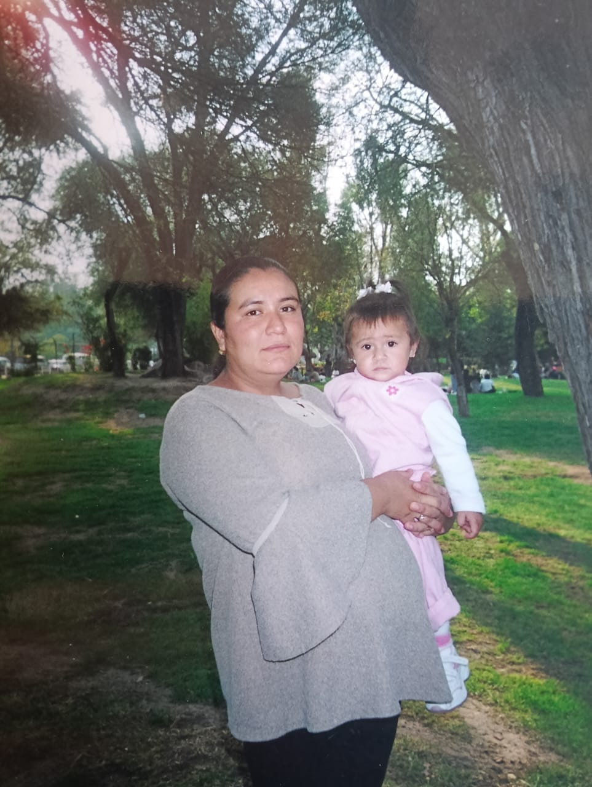
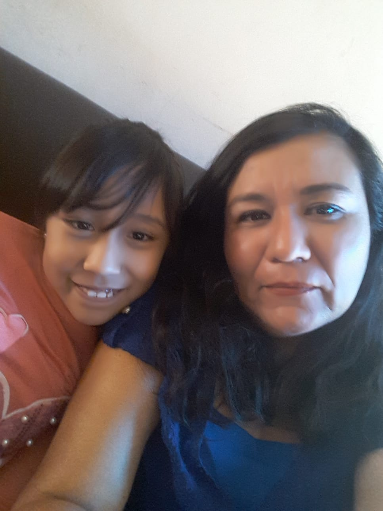

Gracias por todo lo que nos has enseñado durante toda nuestra vida, sabes cómo hacernos felices, eres el centro de nuestra familia, gracias por estar con nosotros.

Gracias por todos los momentos que hemos pasado a tu lado, incluso en las peleas siempre hemos salido adelante. Somos muy unidos y gracias a ti hemos sacado todo nuestro potencial y podemos hacer lo que más nos gusta.

Gracias por cuidarnos siempre desde muy pequeños y sacrificar muchas cosas por nosotros. Te amaremos para toda la vida y sabes que siempre estaremos contigo en las buenas y en las malas.
José Miguel

Gracias por apoyarme en todas mis metas y estar siempre conmigo. No hay palabras para agradecerte, ya que eres muy importante en mi vida. Espero tenerte para siempre, te quiero mucho y siempre estaré muy agradecido contigo por apoyarme en todo lo que se me ha cruzado en la vida. Muchas gracias por aguantarme en todos los aspectos. Te amo, mamá.
Eres la mejor mamá del mundo <3
María Sabina

Mama, En este día tal especial quiero decirte que te quiero mucho, te quiero agradecer por permanecer en mi vida a pesar de todo, agradecerte por todos los momentos que hemos pasado, tanto buenos como no tan agradables, por todas tus enseñanzas y por todos tus cuidados, por darme tu mano siempre que la ocupo y por celebrar mis triunfos como si fueran tuyos, porque también lo son.
Gracias por todo, por qué todo lo que soy ahora es gracias a ti, muchas gracias por estar siempre. Te amo mucho
Karol Mariana

Mamá, gracias por ser mi guía, mi fuerza y mi refugio.
Tu amor incondicional y tus sacrificios me han dado todo lo que soy. Te amo más de lo que las palabras pueden expresar.
Eres mi ejemplo y mi mayor inspiración. Gracias por estar siempre a mi lado. Te quiero mucho mami, Feliz Día
Celebrando a la mejor mamá del mundo